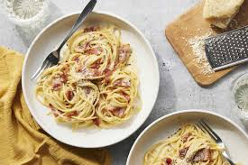

Spaghetti Carbonara

Ingredients
For the Carbonara:
- 200g spaghetti
- 100g pancetta
- 2 large eggs
- 50g Pecorino cheese
- 50g Parmesan cheese
- Freshly ground black pepper
- Sea salt
- 2 cloves of garlic, peeled
- 50g unsalted butter
Directions
- Put a large saucepan of water on to boil.
- Finely chop the pancetta, having first removed any rind. Finely grate both cheeses and mix them together.
- Beat the eggs in a medium bowl, season with a little freshly grated black pepper and set everything aside.
- Add 1 tsp salt to the boiling water, add the spaghetti and when the water comes back to the boil, cook at a constant simmer, covered, for 10 minutes or until al dente (just cooked).
- Squash 2 peeled plump garlic cloves with the blade of a knife, just to bruise it.
- While the spaghetti is cooking, fry the pancetta with the garlic. Drop the butter into a large wide frying pan or wok and, as soon as the butter has melted, tip in the pancetta and garlic.
- Leave to cook on a medium heat for about 5 minutes, stirring often, until the pancetta is golden and crisp. The garlic has now fulfilled its role and can be discarded.
- Keep the heat under the pancetta on low. When the pasta is ready, lift it from the water with a pasta fork or tongs and put it in the frying pan with the pancetta. Do not throw away the pasta water.
- Mix most of the cheese in with the eggs, keeping a small handful back for sprinkling over later.
- Take the pan of spaghetti and pancetta off the heat. Quickly pour in the eggs and cheese. Using the tongs or a long fork, lift up the spaghetti so it mixes easily with the egg mixture, which thickens but doesn’t scramble, and everything is coated.
- Add extra pasta cooking water to keep it saucy. You don’t want it wet, just moist. Serve immediately with a little sprinkling of the remaining cheese and a grating of black pepper.